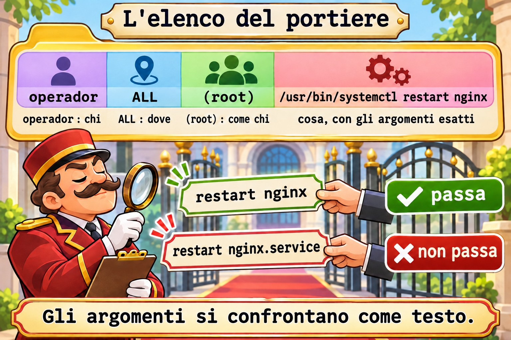
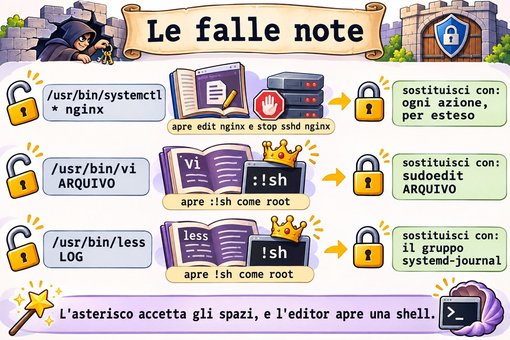
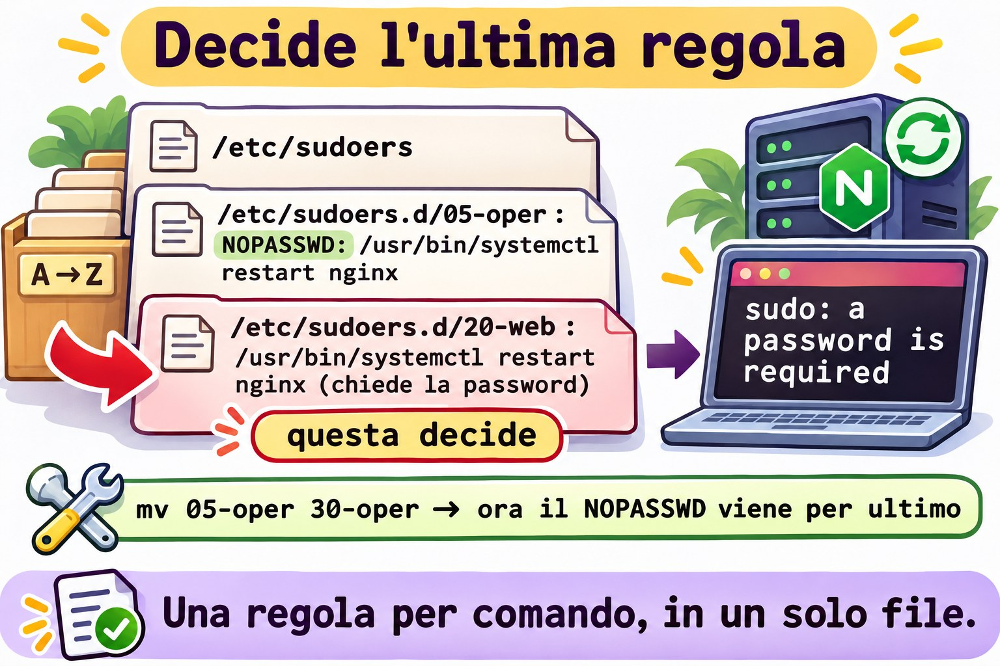

Lezione 10.4 · sudo sul serio
In Windows, mettere qualcuno nel gruppo Administrators risolve subito e consegna tutto. Per dare un solo compito, monti una delega, o un endpoint JEA, con l'elenco esatto dei comandi. In Linux, wheel (Rocky) e sudo (Debian) sono il gruppo Administrators, e sudoers è la delega fine. Nella Lezione 2.5 hai scritto la prima regola. In questa lezione scrivi regole che non aprono falle: solo i comandi e gli argomenti giusti, senza caratteri jolly pericolosi, con modifica sicura dei file e con la registrazione di tutto. Alla fine arriva la Sfida dell'M10.
Il cuore di questa lezione: leggere una regola come
quem onde=(como quem) o quê; raggruppare comandi in unCmnd_Alias; ricordare che gli argomenti devono corrispondere esattamente; provare una regola consudo -l -Uprima di usarla; controllare un file convisudo -cfprima di installarlo; evitare*negli argomenti; e sapere che, tra due regole che corrispondono, vale l'ultima. Il resto è approfondimento.
| Scheda | |
|---|---|
| Modulo | M10 · Utenti e accesso privilegiato, lezione 4 di 4, con la Sfida del modulo |
| Quando | Settimana 15 |
| Alla fine | Dai a una persona esattamente un comando come root, dimostri che non passa nient'altro e trovi chi ha più accesso del dovuto |
| Prerequisiti | Lezioni 2.5, 10.2 e 10.3 |
| Durata | circa 2h30, più 1h per la Sfida |
| Snapshot | m10a4-inicio e m10a4-fim su rocky-lab e debian-lab |
1 · Riscaldamento
Rispondi prima di leggere.
- La regola permette
/usr/bin/systemctl restart nginx. L'operatore riesce a lanciaresudo systemctl restart nginx.service? - Perché dare a qualcuno
sudo less /var/log/secureequivale a dargliroot? - Due file di
/etc/sudoers.d/parlano dello stesso comando, uno conNOPASSWDe l'altro senza. Quale vale?
2 · Perché conta
| La richiesta | La risposta sbagliata | Cosa provoca |
|---|---|---|
| "L'operatore deve riavviare nginx" | Metterlo in wheel | Può tutto, perfino distruggere il server |
| "Fagli toccare solo nginx" | /usr/bin/systemctl * nginx | L'* accetta edit nginx, che apre un editor come root, e stop sshd nginx |
| "Deve leggere i log" | sudo less /var/log/... | Dentro less, !sh apre una shell di root |
| "Deve modificare la configurazione del sito" | sudo vi /etc/nginx/... | Stessa cosa: anche vi apre una shell |
| "Ho creato la regola e non funziona" | Modificare di nuovo il file, alla cieca | Il problema era l'argomento diverso o un'altra regola dopo questa |
3 · Modello mentale
Pensa all'elenco del portiere. Ogni riga dice chi può, in quale palazzo, al posto di chi e fare cosa. Il portiere legge l'elenco intero, dall'alto in basso, file per file, e decide l'ultima riga che corrisponde alla richiesta. Ed è letterale: se l'elenco dice "aprire la sala 12", "aprire la sala 12 e la 13" non corrisponde.
operador ALL =(root) /usr/bin/systemctl restart nginx
quem onde como o quê, com os argumentos exatos
leitura: /etc/sudoers → /etc/sudoers.d/ em ordem alfabética (05-..., 20-..., 30-...)
decisão: a última linha que combina com quem, onde, como e o quê

Ponte Windows
| In Windows | In Linux | Dove il paragone inganna |
|---|---|---|
| Gruppo Administrators | wheel (Rocky) e sudo (Debian) | Chi ne fa parte può tutto, con la propria password |
| "Esegui come amministratore" (UAC) | sudo comando | sudo chiede la password di chi lo lancia, non quella di root |
| JEA, con l'elenco dei comandi permessi | Cmnd_Alias e una regola in sudoers.d | Gli argomenti si confrontano come testo: uno in più e non passa |
| Log di sicurezza (4688, 4672) | journalctl _COMM=sudo e /var/log/secure | Ogni sudo diventa una riga, accettato o negato |
| Politica applicata da GPO | File in /etc/sudoers.d/ | Un errore di sintassi può togliere sudo a tutti: controlla prima |
4 · L'essenziale
La regola
| Parte | Esempio | Significa |
|---|---|---|
| Chi | operador, %web | Un account, o un gruppo con % |
| Dove | ALL | Su qualsiasi macchina che usi questo file |
| Come chi | (root) | Gira come root; (ALL) lascia scegliere chiunque |
| Opzioni | NOPASSWD: | Non chiede la password |
| Cosa | /usr/bin/systemctl restart nginx | Percorso completo e argomenti esatti |
Cmnd_Alias WEB_OPER = /usr/bin/systemctl restart nginx, /usr/bin/systemctl reload nginx
operador ALL=(root) WEB_OPERGli argomenti si confrontano come testo: restart nginx non accetta né restart nginx.service né restart nginx sshd. Un comando senza argomenti nella regola accetta qualsiasi argomento; per vietarli tutti, scrivi "" dopo il comando.
E status? Non ha bisogno di sudo: qualsiasi utente lancia systemctl status nginx. Non dare via sudo ciò che la persona può già fare senza.
Controllare prima di installare
sudo visudo -cf /tmp/20-web
sudo install -m 0440 -o root -g root /tmp/20-web /etc/sudoers.d/20-web
sudo -l -U operador
sudo -l -U operador /usr/bin/systemctl restart nginx; echo $?visudo -cf controlla la sintassi di un file prima che arrivi in sudoers.d. sudo -l -U mostra le regole di un'altra persona; con un comando in fondo, risponde se quel comando passa (codice 0) o no (codice 1), senza lanciare nulla.

Le falle note
| Dare questo | Apre | Dare questo al suo posto |
|---|---|---|
/usr/bin/systemctl * nginx | edit nginx e stop sshd nginx | Ogni azione, per esteso |
/usr/bin/vi ARQUIVO | :!sh come root | sudoedit ARQUIVO |
/usr/bin/less LOG | !sh come root | Il gruppo systemd-journal (o adm su Debian) |
Uno script in /home/operador/ | Lui stesso modifica lo script | Script di root, in /usr/local/sbin/, modo 0755 |
(ALL) nel "come chi" | Girare come qualsiasi account | (root) o l'account del servizio |
sudoedit copia il file in una cartella temporanea, apre l'editor come la persona stessa e lo riscrive, come root, solo quando lei esce dall'editor. Un :!sh lì dentro apre una shell della persona, non di root.


Opzioni utili
| Opzione | Fa |
|---|---|
Defaults:operador timestamp_timeout=5 | La password vale 5 minuti per lui |
Defaults logfile=/var/log/sudo.log | Un log solo di sudo, oltre al journal |
Defaults:operador log_output | Registra l'output di ogni comando; sudoreplay lo riproduce |
NOEXEC: prima del comando | Impedisce al comando di aprire altri programmi, quando funziona |
Rocky × Debian
| Rocky | Debian | |
|---|---|---|
| Gruppo degli amministratori | wheel | sudo |
Inclusione di sudoers.d | #includedir /etc/sudoers.d | @includedir /etc/sudoers.d |
systemctl | /usr/bin/systemctl | /usr/bin/systemctl |
nginx | sudo dnf install -y nginx e systemctl enable --now nginx | sudo apt install -y nginx (parte da solo) |
Log di sudo | /var/log/secure e il journal | Il journal, e /var/log/auth.log, se c'è |
| Gruppo di lettura dei log | systemd-journal | systemd-journal e adm |
5 · Lab guidato
Passo 0 · Snapshot e stato. In Proxmox: qm snapshot 201 m10a4-inicio e qm snapshot 202 m10a4-inicio. Su rocky-lab:
sudo ls -l /etc/sudoers.d/
getent group wheel
sudo visudo -cvisudo -c controlla tutti i file e termina con parsed OK su ognuno. Annota ciò che esiste già in sudoers.d: alla fine lo lascerai uguale.
Passo 1 · nginx e l'elenco principale.
sudo dnf install -y nginx
sudo systemctl enable --now nginx
systemctl is-active nginx
sudo grep -vE '^\s*$|^#( |#|$)' /etc/sudoersIl grep toglie i commenti e lascia #includedir, che non è un commento. Restano i Defaults, la riga di root, quella di %wheel e #includedir /etc/sudoers.d. Leggi quella di %wheel con la tabella della sezione 4: chi è nel gruppo, su qualsiasi macchina, come qualsiasi account, qualsiasi comando.
Passo 2 · L'operatore.
sudo useradd -u 2410 -c "Operador Web" -m -s /bin/bash operador
sudo passwd operador
id operadorDagli una password che rispetti la politica della Lezione 10.2 e annotala nel quaderno del lab. L'operatore non è in wheel: per ora non ha nessun sudo.
sudo -l -U operadorLa risposta dice che non può lanciare sudo su questa macchina.
Passo 3 · La regola, controllata prima di installarla.
cat > /tmp/20-web <<'FIM'
Cmnd_Alias WEB_OPER = /usr/bin/systemctl restart nginx, /usr/bin/systemctl reload nginx
operador ALL=(root) WEB_OPER
FIM
sudo visudo -cf /tmp/20-web
sudo install -m 0440 -o root -g root /tmp/20-web /etc/sudoers.d/20-web
rm /tmp/20-web
sudo visudo -c
sudo -l -U operadorvisudo -cf risponde parsed OK, e solo allora il file entra in sudoers.d, già con proprietario e modo giusti. Ora sudo -l -U elenca i due comandi, come (root).
Passo 4 · Provare senza lanciare.
sudo -l -U operador /usr/bin/systemctl restart nginx; echo $?
sudo -l -U operador /usr/bin/systemctl restart nginx.service; echo $?
sudo -l -U operador /usr/bin/systemctl stop nginx; echo $?Il primo stampa il percorso del comando e 0. Gli altri due terminano con 1: nginx.service non è il testo della regola, e stop non c'è.
Passo 5 · Ora come operatore.
su - operador
sudo systemctl restart nginx
systemctl status nginx --no-pager | head -n 5
sudo systemctl restart nginx.service
sudo systemctl stop nginx
exitsudo chiede la password dell'operatore, una volta. Il restart funziona, e lo status gira senza sudo. Gli ultimi due rispondono qualcosa come Sorry, user operador is not allowed to execute '/usr/bin/systemctl stop nginx' as root on rocky-lab.
Passo 6 · La registrazione.
sudo journalctl _COMM=sudo --since '-10min' --no-pager | grep operadorOgni tentativo è diventato una riga, con TTY, PWD, USER=root e il COMMAND. Quelli negati riportano command not allowed. È questo che mostri in un audit.
Passo 7 · Il carattere jolly, solo guardando. Installa una regola sbagliata per un istante e chiedi a sudo, senza lanciare:
echo 'operador ALL=(root) /usr/bin/systemctl * nginx' > /tmp/25-curinga
sudo visudo -cf /tmp/25-curinga
sudo install -m 0440 -o root -g root /tmp/25-curinga /etc/sudoers.d/25-curinga
sudo -l -U operador /usr/bin/systemctl edit nginx; echo $?
sudo -l -U operador /usr/bin/systemctl stop sshd nginx; echo $?
sudo rm /etc/sudoers.d/25-curinga /tmp/25-curingaPassano entrambi, con 0. edit apre un editor come root, e da lì esce una shell. Il secondo butta giù sshd. La sintassi era giusta; era la regola a essere sbagliata. Non lanciare questi comandi.
Passo 8 · Modificare in sicurezza.
sudo install -m 0644 /dev/null /etc/nginx/conf.d/curso.conf
echo 'operador ALL=(root) sudoedit /etc/nginx/conf.d/curso.conf, /usr/sbin/nginx -t' > /tmp/21-web-conf
sudo visudo -cf /tmp/21-web-conf
sudo install -m 0440 -o root -g root /tmp/21-web-conf /etc/sudoers.d/21-web-conf
rm /tmp/21-web-conf
su - operador
sudoedit /etc/nginx/conf.d/curso.confL'editor apre un file temporaneo. Scrivi una riga # editado pelo operador, salva ed esci. Sempre come operatore:
sudo /usr/sbin/nginx -t
sudo systemctl reload nginx
cat /etc/nginx/conf.d/curso.conf
exitnginx -t risponde syntax is ok e test is successful, e il file ha la riga nuova. L'operatore ha modificato un file di root senza mai avere un editor in esecuzione come root.
Passo 9 · Verificare chi può cosa.
getent group wheel
for u in $(getent passwd | awk -F: '$3 >= 1000 && $3 < 60000 {print $1}'); do
echo "== $u"; sudo -l -U "$u" | sed -n '/may run/,$p'
doneOgni persona compare con ciò che può fare, o senza nessuna riga, se non può nulla. student ha (ALL) ALL, tramite wheel; l'operatore, solo i suoi tre comandi.
Passo 10 · debian-lab. Ripeti i passi da 0 a 9. Installa con sudo apt install -y nginx, e nel Passo 9 sostituisci wheel con sudo.
Decidi 1
Chiedono che l'operatore possa fermare, avviare, riavviare e ricaricare nginx. Quale regola?
A) operador ALL=(root) /usr/bin/systemctl * nginx. B) Un Cmnd_Alias con le quattro azioni per esteso. C) operador ALL=(root) /usr/bin/systemctl.
Scegli un'opzione prima di continuare.
| Se hai scelto | Risultato | Perché |
|---|---|---|
| A | Pericoloso | L'* accetta gli spazi: edit nginx e stop sshd nginx passano |
| B | Giusto | Solo le quattro righe, con il testo esatto |
| C | Molto pericoloso | Senza argomenti nella regola, passa qualsiasi argomento: l'operatore ferma l'intero server |
Da ricordare: scrivi ogni comando per esteso; l'* negli argomenti accetta più di quanto sembri.
Decidi 2
L'operatore deve leggere i log di nginx. Come?
A) operador ALL=(root) /usr/bin/less /var/log/nginx/error.log. B) Mettere l'operatore nel gruppo che legge i log (systemd-journal, e adm su Debian) e usare journalctl -u nginx. C) chmod 644 su tutti i log.
Scegli un'opzione prima di continuare.
| Se hai scelto | Risultato | Perché |
|---|---|---|
| A | Pericoloso | Dentro less, !sh apre una shell di root |
| B | Giusto | Legge senza sudo; nulla gira come root |
| C | Debole | Tutti cominciano a leggere, e la prossima rotazione dei log lo annulla |
Da ricordare: l'accesso in lettura si dà con un gruppo, non con sudo.
6 · Rompi e ripara
Guasto 1 · Il percorso incompleto
echo 'operador ALL=(root) systemctl restart nginx' > /tmp/22-ruim
sudo visudo -cf /tmp/22-ruim; echo $?Sintomo: visudo rifiuta il file, con codice 1 e un messaggio di errore di sintassi che indica la riga e la colonna; nelle versioni attuali, dice che si aspettava un percorso completo.
Indagine: la colonna indicata è quella di systemctl.
Causa: sudoers esige il percorso completo del comando. Senza, andrebbe bene qualsiasi systemctl che la persona mettesse nel PATH.
Riparazione: command -v systemctl dà il percorso; correggi in /usr/bin/systemctl. E nota cosa non è successo: siccome hai controllato prima di installare, sudoers.d non ha mai ricevuto il file sbagliato. Cancellalo: rm /tmp/22-ruim.
Guasto 2 · L'operatore che può tutto
sudo usermod -aG wheel operador
sudo -l -U operador | sed -n '/may run/,$p'Su Debian, usa il gruppo sudo.
Sintomo: oltre ai tre comandi, compare (ALL) ALL.
Indagine: id operador mostra wheel. La regola di 20-web resta giusta: ad aprire tutto è stata la riga %wheel di /etc/sudoers.
Causa: qualcuno ha "risolto in fretta" una richiesta. È il rilievo più comune negli audit di sudo.
Riparazione: sudo gpasswd -d operador wheel e di nuovo sudo -l -U operador. Se aveva una sessione aperta, questa porta ancora wheel (Lezione 10.3): chiudila con sudo loginctl terminate-user operador.
Guasto 3 · Il NOPASSWD che non vale
echo 'operador ALL=(root) NOPASSWD: /usr/bin/systemctl restart nginx' > /tmp/05-oper
sudo visudo -cf /tmp/05-oper
sudo install -m 0440 -o root -g root /tmp/05-oper /etc/sudoers.d/05-oper
sudo -u operador sudo -k
sudo -u operador sudo -n /usr/bin/systemctl restart nginx; echo $?sudo -k cancella la password che l'operatore aveva già digitato, e -n vieta a sudo di chiedere la password.
Sintomo: sudo: a password is required, con codice 1, nonostante il NOPASSWD.
Indagine: sudo -l -U operador elenca le due regole: quella di 05-oper, con NOPASSWD, e quella di 20-web, senza.
Causa: i file vengono letti in ordine alfabetico, e decide l'ultima regola che corrisponde. 20-web viene dopo 05-oper.
Riparazione: cambia l'ordine e riprova; ora il codice è 0:
sudo mv /etc/sudoers.d/05-oper /etc/sudoers.d/30-oper
sudo -u operador sudo -n /usr/bin/systemctl restart nginx; echo $?
sudo rm /etc/sudoers.d/30-oper /tmp/05-operLa riparazione che dura è un'altra: una sola regola per comando, in un solo file.


Pulizia
sudo rm /etc/sudoers.d/20-web /etc/sudoers.d/21-web-conf
sudo rm /etc/nginx/conf.d/curso.conf
sudo systemctl reload nginx
sudo userdel -r operador
sudo ls -l /etc/sudoers.d/
sudo visudo -csudoers.d torna a ciò che hai annotato nel Passo 0. nginx resta installato: serve alla Sfida.
7 · Trappole
| Trappola | Cosa succede | Come evitarla |
|---|---|---|
Modificare sudoers.d direttamente, senza controllare | Un errore di sintassi toglie sudo a tutti | visudo -cf su un file temporaneo, poi install |
* negli argomenti | Passa molto più di quanto volevi | Ogni comando per esteso |
| Comando senza argomenti nella regola | Passa qualsiasi argomento | Argomenti espliciti, o "" per nessuno |
sudo per un editor, less o more | Shell di root | sudoedit e gruppi di lettura |
(ALL) nel "come chi" | La persona gira come qualsiasi account | (root) o l'account del servizio |
| Due file con regole per lo stesso comando | Vale l'ultimo in ordine alfabetico | Una regola per comando |
Persona in wheel "solo per oggi" | Resta per sempre | Audit con sudo -l -U |
| Provare solo con il tuo account | Hai ALL e funziona tutto | sudo -l -U NOME COMANDO e una prova come la persona |
8 · Quiz
Rispondi senza guardare. Le soluzioni sono alla fine della lezione.
- Quali sono le parti di
operador ALL=(root) /usr/bin/systemctl restart nginx? - Cosa risponde
sudo -l -U operador /usr/bin/systemctl stop nginx, e perché è sicuro? - Perché
/usr/bin/systemctl * nginxè una regola pericolosa? - Cosa fa
sudoeditdi diverso dasudo vi? - Due file di
sudoers.ddanno regole diverse per lo stesso comando. Quale vale? - Perché controllare con
visudo -cfprima di copiare il file insudoers.d?
9 · Promemoria
Da sapere a memoria:
| Voglio... | Comando |
|---|---|
| Controllare un file nuovo | sudo visudo -cf ARQUIVO |
| Installare con proprietario e modo | sudo install -m 0440 -o root -g root ARQUIVO /etc/sudoers.d/NN-nome |
| Controllare tutto | sudo visudo -c |
| Vedere le regole di qualcuno | sudo -l -U NOME |
| Provare un comando senza lanciarlo | sudo -l -U NOME /caminho/comando args; echo $? |
| Vedere la registrazione | sudo journalctl _COMM=sudo --since '-1h' |
Da consultare:
| Voglio... | Comando |
|---|---|
| Elenco principale senza commenti | sudo grep -vE '^\s*$|^#( |#|$)' /etc/sudoers |
| Raggruppare comandi | Cmnd_Alias NOME = /cmd1 args, /cmd2 args |
| Modificare un file protetto | NOME ALL=(root) sudoedit /caminho/arquivo |
| Dimenticare la password digitata | sudo -k |
| Provare senza chiedere la password | sudo -n comando |
| Chi è amministratore | getent group wheel (Rocky) e getent group sudo (Debian) |
Flashcard:
- Regola → chi, dove, come chi, cosa.
- Argomenti → confrontati come testo.
- Senza argomenti → qualsiasi argomento.
*→ accetta gli spazi.- Due regole → vale l'ultima.
sudoedit→ l'editor gira come te.
10 · Checklist e chiusura
- [ ] Leggo una regola di
sudoersparte per parte - [ ] Scrivo un
Cmnd_Aliascon argomenti esatti - [ ] Controllo con
visudo -cfe installo coninstall -m 0440 - [ ] Provo una regola con
sudo -l -Usenza lanciare il comando - [ ] Riconosco caratteri jolly, editor e paginatori pericolosi
- [ ] Do una modifica sicura con
sudoedit - [ ] Verifico chi ha
sudoe cosa può fare
Ultimo esercizio, senza guardare la lezione: su debian-lab, dai ad Ana il diritto di lanciare solo /usr/bin/systemctl reload nginx, senza password. Dimostra con sudo -u ana sudo -n che il reload passa e il restart no. Cancella la regola.
Snapshot di fine (in Proxmox):
qm snapshot 201 m10a4-fim
qm snapshot 202 m10a4-fim11 · Nella vita reale
Missione, sola lettura. Su un server Linux che amministri (o con autorizzazione), lancia solo:
getent group wheel sudo
sudo ls -l /etc/sudoers.d/
sudo grep -rhvE '^\s*$|^#( |#|$)' /etc/sudoers /etc/sudoers.d/
sudo journalctl _COMM=sudo --since '-7d' --no-pager | grep -c 'command not allowed'Domande a cui rispondere:
- Quante persone sono nel gruppo degli amministratori? Servono tutte?
- Qualche regola ha
*negli argomenti, un editor, un paginatore oNOPASSWD: ALL? - Quanti rifiuti ci sono stati nell'ultima settimana? Di chi?
12 · Approfondire quando vuoi
man sudoers: la grammatica completa, i caratteri jolly,Defaults,NOEXECe l'ordine delle regole.man sudoreplay: riprodurre una sessione registrata conlog_output.man sudoedit: come funziona la modifica sicura e le cartelle che rifiuta.- GTFOBins: un elenco pubblico di programmi che aprono una shell quando girano tramite
sudo. Consultalo prima di concedere qualsiasi programma.
DeepTutor (http://10.1.0.149:3782, KB "Curso Linux Sysadmin"):
!explica uma regra do sudoers com a metáfora da lista do porteiro!feynman por que um curinga nos argumentos do sudo é perigoso!quiz Aula 10.4, 5 perguntas sobre sudoers, sudoedit e auditoria
Sfida dell'M10 · La squadra di reperibilità
La missione: su rocky-lab, monta la squadra di reperibilità: tre persone, una cartella comune, una politica delle password e una persona che può solo riavviare nginx. Tutto con uno script che può girare di nuovo senza rompere nulla.
Senza passo passo. I suggerimenti sono nelle Soluzioni.
Prima di cominciare: in Proxmox, qm snapshot 201 m10-desafio-inicio.
Requisiti:
- Gruppo
plantaocon GID 2400. Accountdora(2401),edu(2402) efabi(2403), con il gruppo personale come principale,plantaocome supplementare, cartella personale e Bash. - Cartella
/srv/plantao, del gruppoplantao, in cui i tre creano e modificano i file gli uni degli altri, e non entra nessun altro. - Dora amministra il gruppo
plantao, senzasudo. - Le password dei tre scadono in 90 giorni, con 1 giorno minimo tra un cambio e l'altro e avviso 14 giorni prima. Ognuno riceve una password provvisoria e deve cambiarla al primo accesso.
- Fabi può lanciare come
rootsolo/usr/bin/systemctl restart nginx, con la propria password. Dora ed Edu non hannosudo. - I requisiti 1, 2, 3, 5 e la scadenza del requisito 4 escono da uno script
~/m10-desafio.sh, che gira comeroot, può girare due volte di seguito senza errori e non duplica nulla.
Criteri di accettazione:
- [ ]
sudo bash ~/m10-desafio.shgira due volte di seguito senza errori - [ ]
getent group plantaomostra i tre, esudo getent gshadow plantaomostra Dora come amministratrice - [ ]
sudo chage -l edumostra 90, 1 e 14, epassword must be changed - [ ]
sudo -u dora bash -c 'umask 002; echo escala > /srv/plantao/escala.txt'esudo -u edu bash -c 'echo troca >> /srv/plantao/escala.txt'funzionano - [ ]
sudo -l -U fabimostra solo ilrestartdi nginx;sudo -l -U fabi /usr/bin/systemctl stop nginx; echo $?dà1 - [ ]
sudo -l -U doraesudo -l -U edudicono che non possono usaresudo - [ ]
sudo visudo -cnon mostra errori
Alla fine:
sudo rm /etc/sudoers.d/30-plantao
for u in dora edu fabi; do sudo userdel -r "$u"; done
sudo rm -r /srv/plantao
sudo groupdel plantaoIn Proxmox: qm snapshot 201 m10-desafio-fim.
Hai chiuso l'M10. Ora gestisci account di persone e di servizi, cambi nomi e numeri senza lasciare file orfani, definisci e applichi una politica delle password, organizzi gruppi con delega e dai accesso privilegiato nella misura esatta, con registrazione. Il prossimo modulo è nel piano del corso.
Soluzioni commentate
Riscaldamento
- No. Gli argomenti si confrontano come testo, e
nginx.servicenon ènginx. - Perché
lessgira comeroote accetta!sh, che apre una shell con lo stesso utente:root. - Quello che viene per ultimo in ordine alfabetico: decide l'ultima regola che corrisponde.
Quiz
operadorè chi;ALLè dove;(root)è come chi;/usr/bin/systemctl restart nginxè cosa, con gli argomenti esatti.- Risponde se il comando passa (stampa il percorso, codice 0) o no (codice 1). È sicuro perché consulta solo la politica: non gira nulla.
- Perché l'
*accetta qualsiasi testo, spazi compresi: passanoedit nginx, che apre un editor comeroot, estop sshd nginx. sudoeditapre l'editor come la persona stessa, su una copia, e scrive il file comerootsolo alla fine. Consudo vi, l'intero editor gira comeroot, e un:!shdiventa una shell diroot.- Quello letto per ultimo, in ordine alfabetico, perché decide l'ultima regola che corrisponde.
- Perché un errore di sintassi in un file di
sudoers.dpuò far rifiutare tutto asudo, anche a te. Controllando prima, il file sbagliato non arriva mai lì.
Suggerimenti per la Sfida
Leggine una alla volta.
- Rigirare senza errori: prima di creare, chiedi se esiste già:
getent group plantao >/dev/null || groupadd -g 2400 plantao, e lo stesso congetent passwdprima di ogniuseradd.install -d,chage -Megpasswd -Apossono girare di nuovo senza problemi. - La cartella:
install -d -m 2770 -o root -g plantao /srv/plantao. L'umask 002del criterio di accettazione fa la parte del login (Lezione 2.8). - La regola: scrivila in un file temporaneo (
mktemp), controllala convisudo -cfe installala coninstall -m 0440come/etc/sudoers.d/30-plantao. Sevisudola rifiuta,set -eferma lo script prima dell'installazione. - L'ordine delle password: prima
passwdper ognuno, poichage -d 0. Al contrario,passwdregistra la data di oggi come ultimo cambio e annulla ilchage -d 0. Per questo le password provvisorie restano fuori dallo script. - Uno script possibile:
#!/bin/bash
set -euo pipefail
getent group plantao >/dev/null || groupadd -g 2400 plantao
for linha in dora:2401 edu:2402 fabi:2403; do
nome=${linha%%:*}
uid=${linha##*:}
getent passwd "$nome" >/dev/null || useradd -u "$uid" -m -s /bin/bash -G plantao "$nome"
chage -M 90 -m 1 -W 14 "$nome"
done
install -d -m 2770 -o root -g plantao /srv/plantao
gpasswd -A dora plantao
regra=$(mktemp)
echo 'fabi ALL=(root) /usr/bin/systemctl restart nginx' > "$regra"
visudo -cf "$regra" >/dev/null
install -m 0440 -o root -g root "$regra" /etc/sudoers.d/30-plantao
rm -f "$regra"Dopo lo script: sudo passwd dora e sudo chage -d 0 dora, e lo stesso per Edu e Fabi.